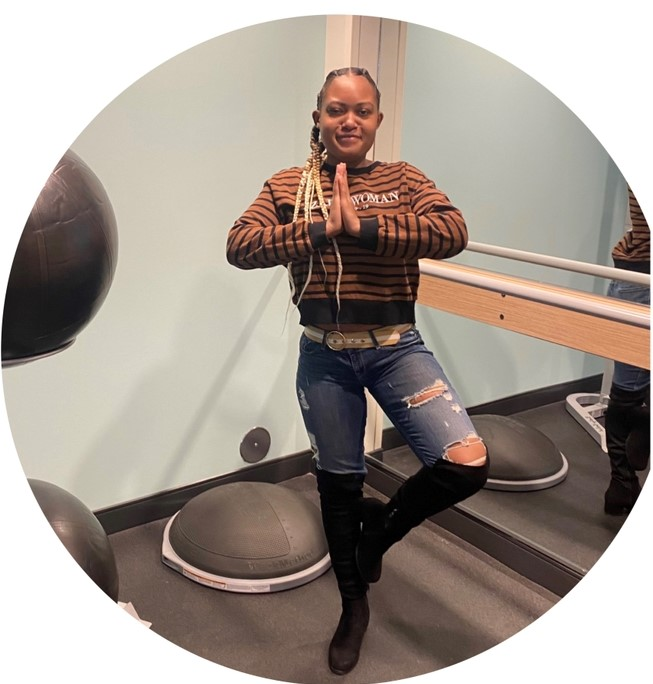

Welcome to Yoga with Imani
I offer classes to cater to diffrent needs,
including gentle yoga, Yin Yoga, and chair Yoga.
My Classes is help designed to relieve
stress and anxiety, and create a
space for relaxation and rejuventation.
Please note that my classes are for adults only
and kindly asking that you do not bring
children to the class.
please bring your Yoga mat if you
have one. If you don't have
A Yoga mat please text me for an additional
price in the contact me page. Thank-You

My Classes
Yin Yoga
Yin Yoga is a relaxation-based practice that targets the connective tissues in the body such as the ligaments, bones and joints. It is characterized by its slower pace and holding of postures for a longer period of time (usually 3 to 5 minutes). Yin yoga encourages practitioners to find mental and physical stillness and let go of any expectations."
Chair Yoga
Chair Yoga is a type of yoga practice that uses a chair to provide support, balance and accessibility for participants.Chair Yoga helps to improve flexibility and range of motion, muscle strength and endurance, and breathing capacity. Chair yoga can also help reduce stress and tension, and promoterelaxation and calmness."
Gentle Yoga
Gentle Yoga is a slower-paced practice that focuses on deep breathing, meditation, and gentle movements. It is suitable for people of all ages and abilities, including beginners, seniors, and those recovering from injuries or illnesses. Gentle yoga helps to improve flexibility, balance, strength, and relaxation. It also promotes mental clarity and stress reduction by using mindful breathing and relaxation techniques. Gentle yoga can help individuals find peace and calmnessin their lives.
About Me
I am a certified 200 hours yoga instructor, having graduated from Yoga Renew with a specialization in gentle yoga, yin yoga, and chair yoga. I believe in the power of yoga to promote physical and mental health for individuals of all abilities and ages. With my expertise in these styles, I guide my students through mindful movements, breath work, and meditation to promote relaxation, reduce stress, and enhance overall wellbeing. My classes are accessible and adaptive, catering to each individual's unique needs and goals."
About Me